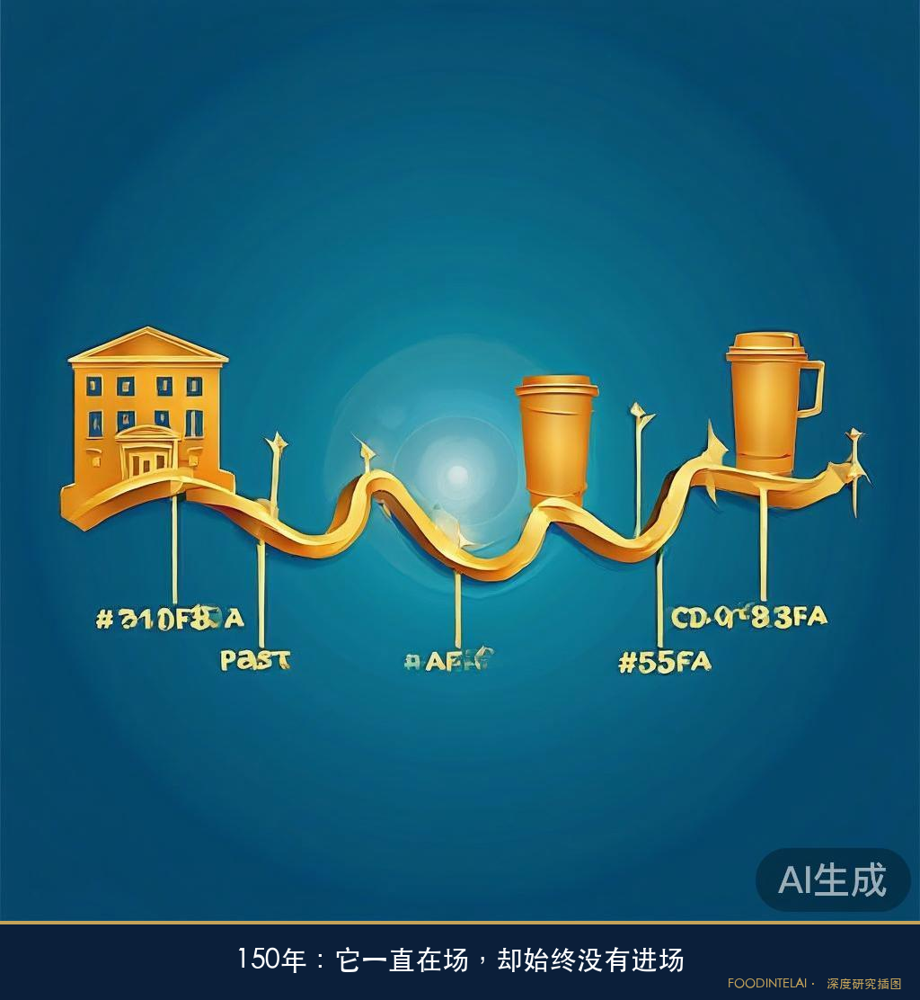
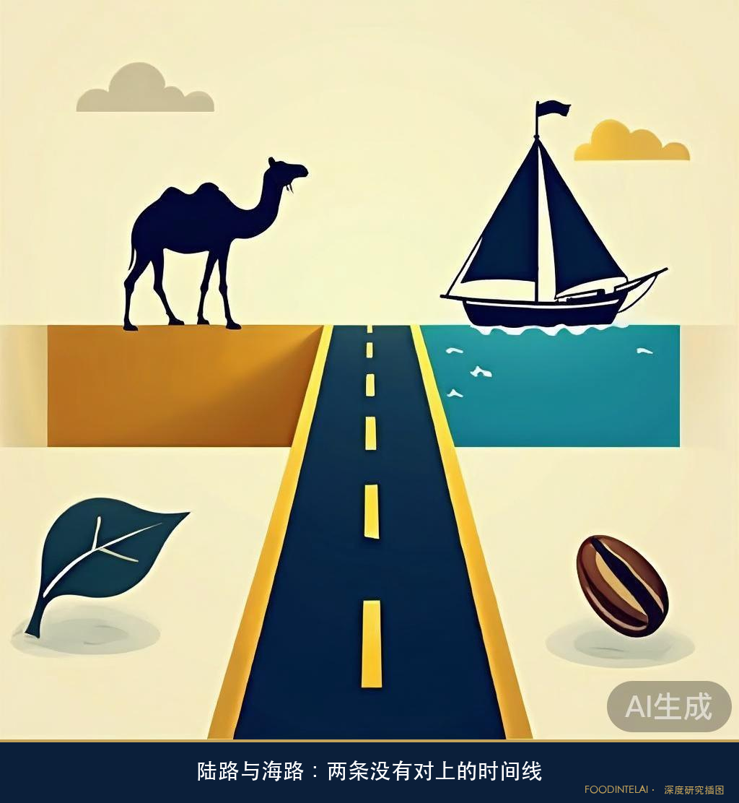
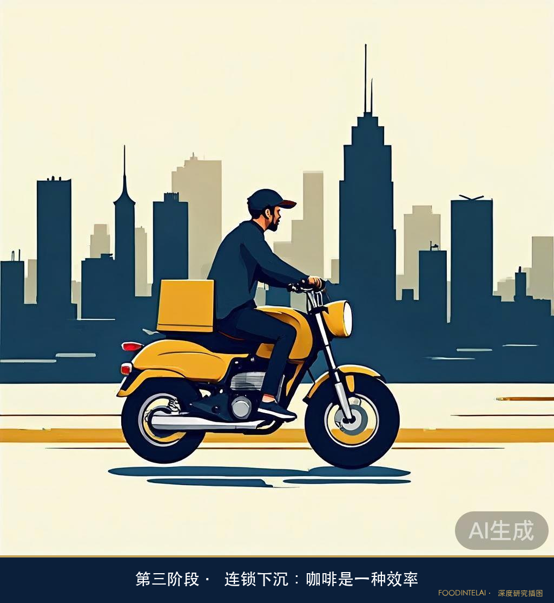
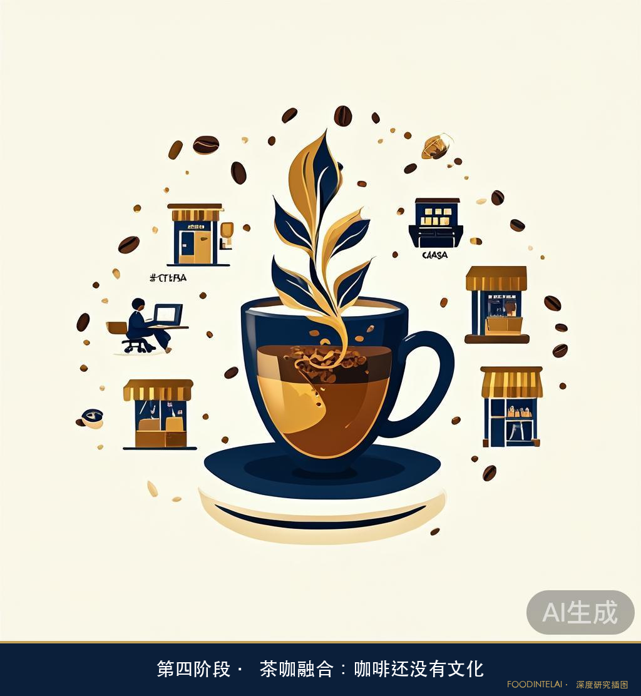

FOODINTELAI 深度研究
DEEP RESEARCH · 咖啡产业观察 · 历史专题
中国咖啡渗透地图 · 第1篇｜咖啡认识中国，比中国接受咖啡，早了一百五十年
历史专题 · 它一直“在场”，却始终没有“进场”
先说一个大多数人不知道的事实："咖啡"这两个字，出现在中国文献里的时间，比中国咖啡真正进入大众消费市场，早了一百五十多年。
1828年，英国传教士马礼逊编纂的《广东省土话字汇》里，已经收录了"咖啡"的广州话译音——"架啡"。十一年后，1839年，林则徐在广州主持禁烟期间，组织编撰《四洲志》，为了让清廷看清世界大势，书里详细记录了也门的物产，其中一段写道，当地人"以架非豆、柳豆之壳浸水饮之"——据现存文献记载，这是中国官方文献中最早系统描述咖啡豆形状、颜色和风味的段落：形似肾脏，生豆色白、酸中带涩，烘焙后深褐焦苦，藏着花果香。写下这段话的人，同一年正在虎门销烟。
更早三年，1836年，一位丹麦商人已经在广州十三行的靖远街开了一家咖啡馆，名叫"北风与海"——这是目前公开资料中可查到的中国最早的咖啡馆之一。当时的中国人对这种黑色饮料相当陌生，《广东通志》干脆叫它"黑酒"，说"番鬼饭后饮之，云此酒可消食也"。到1840年前后，据当时西方传教士留下的记载，广州的中国工匠已经能仿制荷兰式的铜制咖啡研磨机了。
也就是说，咖啡这个东西、这个词、连同它的制作工具，在鸦片战争前后就已经完整地出现在中国土地上。可它真正变成一种被大众接受、可以日常购买的商品，要等到整整一个半世纪之后。中间这150年，咖啡在中国的处境很微妙：它一直"在场"，却始终没有"进场"。

一、为什么咖啡没有搭上丝绸之路的顺风车
有一个问题值得先想清楚：中国的茶叶通过丝绸之路走向了世界，反过来，咖啡为什么没能沿着同一条路走进中国？
答案不是哪种饮品更"优越"，而是两条历史时间线没有真正对上。
咖啡作为饮料的历史，比它成为全球商品要早得多。咖啡原产于非洲东北部，后来传入也门。到15世纪末，咖啡饮用已经传播到麦加和开罗；16世纪，咖啡进一步进入大马士革、伊斯坦布尔等城市，并随着伊斯兰世界的贸易和人口流动继续扩散。17世纪以后，咖啡进入欧洲，并逐渐在英国、荷兰等地形成咖啡馆文化。也就是说，咖啡从一种区域性的饮料，变成跨洲流通的商品，是一个持续了几个世纪的过程。
有意思的是，咖啡向西扩散的这几个世纪，恰好也是中国对外贸易网络发生重要变化的时期。
唐宋以后，中国与中亚、西亚之间的贸易并没有突然消失，但传统陆上通道的重要性逐渐下降，海上贸易的重要性不断上升。广州在唐宋时期已经是重要的海上贸易港口，海外商船可以从这里经过南海、印度洋通往波斯湾等地区。
到了明清时期，广州的海上贸易进一步发展。1757年，清政府撤销江、浙、闽三个海关，只保留粤海关对外贸易，广州由此成为清代面向西方贸易的核心口岸。外国商船进入广州后，还必须先在黄埔停泊、办理手续，再进入十三行进行交易。
因此，更准确的说法不是"咖啡错过了丝绸之路"，而是：咖啡形成全球贸易商品的历史阶段，与中国对外贸易从传统陆路网络向海上网络不断转移的历史阶段发生了时间上的错位。
当咖啡已经从也门扩散到中东、欧洲，并开始成为一种全球贸易商品时，中国与西方之间的大宗商品交换，已经越来越依赖海上航线。等咖啡真正通过稳定的国际贸易网络进入中国，它所面对的已经不是一条连接中西的传统陆路，而是一套以广州、黄埔和十三行为节点的海上贸易体系。

所以，咖啡并不是"没有机会通过丝绸之路进入中国"。
更准确地说，它成为全球商品的时候，中国接受它的主要贸易通道，已经换了。
真正把咖啡带到中国的，正是这套新的海上网络：外商、传教士、商人以及后来接触海外生活方式的华侨，共同构成了咖啡进入中国的早期传播链条。
这也解释了咖啡进入中国后的一个重要特征：它最初并不是一种依靠大规模贸易迅速铺开的大众商品，而更多是随着特定的人群、城市和生活方式进入中国。
于是，咖啡虽然早早"到过中国"，却很长时间没有真正"进入中国人的日常生活"。
二、一百五十年里，咖啡为什么始终是"少数人的东西"
从1836年广州出现咖啡馆，到1980年代速溶咖啡真正批量进入普通中国家庭，中间这一百五十年，咖啡在中国从来没有消失过，但也从来没有真正大众化。
20世纪初，广州一带已有本土商人整合十三行留下的烘焙技艺，开设咖啡烘焙作坊；差不多同一时期，广东商人从印尼带回咖啡种子，在海南试种成功——这条种植线，后来成为中国咖啡种植史的重要组成部分；它与云南朱苦拉的早期种植记录（据考证种植于1892年，也存在1902、1904等不同说法），是中国咖啡种植史上两条值得区分的历史线索。到了1920-30年代的上海，法租界和日租界一带的咖啡馆成了新派文人的据点：剧作家田汉写过《咖啡店之一夜》，自己还开过咖啡馆；连鲁迅都留下过"泡中国绿茶之不可用咖啡杯也"这样的句子。
但这些场景有一个共同点：咖啡馆的常客，始终是买办、留学归国的知识分子、租界里的中上流社会——一个规模很小、很固定的圈层。普通中国人对咖啡的想象，一百年里基本没有变化：这是"洋人的东西"。
这背后不是咖啡本身的问题，也不完全是中国人口味的问题，而是几个条件一直没有凑齐：一是没有工业化的规模生产——咖啡豆的烘焙、研磨、萃取在很长时间里都是手工小作坊式的，没有形成可以铺向全国的供应链；二是没有大众消费的经济基础——喝咖啡在很长时间里是一种身份消费，价格和场景都把普通人挡在门外；三是没有一场真正面向大众的市场教育——直到1980年代麦斯威尔、雀巢带着工业化生产的速溶咖啡和电视广告进入中国，才第一次有品牌用大规模、标准化的方式，把"喝咖啡"这件事从一小撮人的生活方式，变成一个可以被所有人理解和购买的商品。
这才是这个系列真正想讲的起点：咖啡在中国，不是一个从零开始被发明认知的新事物，而是一个"认知了一百五十年、却始终没有被市场化"的旧事物，直到工业化生产、消费经济和品牌营销这三个条件同时具备，它才真正开始渗透。接下来的四个阶段，讲的就是这三个条件具备之后，咖啡是怎么一步步从速溶粉末，变成今天这个多场景、多品牌、但还没有形成统一文化的市场。
三、第一阶段：速溶咖啡的启蒙——咖啡是一种"洋气的糖水"
1984年，美国卡夫旗下的麦斯威尔以"麦氏咖啡"的名字合资入华；1985年，麦氏品牌正式进入市场，打响了中国速溶咖啡市场的第一枪。1988年，雀巢紧随其后，在东莞成立东莞雀巢有限公司（雀巢官方确认这是其在中国设立的最早的咖啡工厂），开始在中国本地生产销售咖啡产品。这两家公司面对的是同一个难题：一个喝了几千年茶的国家，凭什么要接受一种苦涩的舶来饮品？
答案是：不讲苦涩，讲甜。雀巢把奶精伴侣加进速溶咖啡里，让原本苦涩的口感变得香甜易入口，再配上"味道好极了"这句广告语反复轰炸，成功把咖啡包装成了一种"时髦"和"高雅"的象征——在80年代，一小盒雀巢咖啡的价格接近一个大学教授月工资的十分之一，喝完之后舍不得扔的雀巢小红杯，甚至成了一种炫耀性质的家居摆件。
这个阶段，中国人认识的"咖啡"，本质上是一种加了奶和糖的速溶粉末。它解决的不是"咖啡文化"的问题，而是"这是什么"的问题。
四、第二阶段：现磨咖啡与第三空间——咖啡是一种"场景"
1999年1月11日，星巴克在北京国贸开出中国大陆第一家门店。这一天，星巴克第一次把"现磨咖啡＋标准化连锁＋空间体验"作为一个完整商业模型，大规模复制到中国。中国人第一次大规模接触到的，不只是一杯现磨咖啡，而是一整套需要仪式感的消费体验：磨豆、萃取、拉花、堂食空间、还有一个专门的英文点单流程。
星巴克带来的真正变化，不是咖啡本身，而是"第三空间"——一个介于家和办公室之间、可以合法消磨时间的公共场所。这个概念精准踩中了当时中国一二线城市正在形成的白领阶层的需求：一杯十几块甚至二十多块的咖啡，买的其实是空间使用权和身份认同。星巴克在中国早期经历了较长的市场培育期。它真正改变的，是把"现磨咖啡＋标准化连锁＋空间体验"作为一个完整商业模型，大规模复制到中国，把"喝咖啡"从"喝一种饮料"重新定义成了"进入一种生活方式"。
肯德基咖啡、Costa等品牌在随后几年跟进，进一步巩固了这个认知——咖啡厅是一个可以被反复复制的商业场景模板，而不只是一杯饮料的载体。
五、第三阶段：连锁下沉与外卖——咖啡是一种"效率"
如果说前两个阶段解决的是"认知"问题，第三阶段解决的是"覆盖"问题。以瑞幸为代表的国产连锁品牌，用完全不同的打法把咖啡送进了更下沉的市场：没有必须堂食的空间成本，主打外卖和快取，价格打到十几块甚至个位数，门店密度铺得比星巴克更细。
这个阶段的核心逻辑变了——咖啡不再需要一个"第三空间"来证明自己的价值，它只需要证明自己足够快、足够便宜、足够触手可及。同期涌入的还有各类现制茶饮品牌旗下的咖啡产品线，进一步把咖啡拆解成了一个可以被高频复购的日常刚需品，而不是一次需要专门腾出时间去消费的仪式。

六、第四阶段：茶咖融合与场景碎片化——咖啡还没有"文化"
现在的中国咖啡市场，正处在这个还没有名字的第四阶段：茶饮品牌大举切入咖啡赛道，各种"茶咖"混搭产品层出不穷；一二线城市的精品咖啡馆、社区咖啡店、便利店咖啡角同时存在；消费者可能上午在办公室点一杯外卖美式，下午又去一家主打手冲的独立咖啡馆坐一下午。
场景足够多了，渠道足够密了，但如果对照咖啡在美国这种真正把它变成日常必需品的市场——那里咖啡消费已经脱离了"哪个品牌""什么场景"这类具体选择，变成一种近乎本能的日常动作——中国咖啡市场目前更像是"多点开花的需求满足"，而不是"自成一体的消费文化"。换句话说：中国人已经有很多理由在很多场景下喝咖啡，但还没有形成一套独立于场景之外、跨品牌跨渠道共享的"咖啡文化"共识。

七、我们为什么要拆解咖啡
这个系列不是蹭热点。选咖啡，是因为它的供应链逻辑，跟我们一直在拆解的中国食品品类，本质上是同一类问题。
咖啡从一颗果子变成一杯饮品，中间充满了不确定性：种植海拔差一百米，风味就会不一样；同样的豆子，水洗、日晒、蜜处理三种发酵方式，做出来是完全不同的产品；烘焙时温度曲线差几度、时间差几十秒，出来的风味谱系就会分道扬镳；到了最后一步，冷萃和热萃取、不同的水粉比和研磨度，又是另一层变量。这种从种植到杯中充满不确定性、却又能被工艺一步步收敛成风味标准的产品逻辑，跟我们之前拆过的牛肉——从部位到场景到工艺，每一步都在决定最终产品是什么——是同一套底层结构。
咖啡的一个特殊之处，在于它既可以被工业化标准化，又保留了足够大的风味、产区、处理法、烘焙和萃取差异。这种"标准化与个性化同时存在"的结构，为文化分化提供了空间。一个完全标准化、每一杯味道都一模一样的商品，是很难长出文化的——它只是一个被大规模复制的物种。但如果咖啡在中国真的走到那个多场景、多群体、多需求同时存在的阶段，不同的处理方式、不同的场景表达，会自然分化出不同的载体和圈层，这才是文化真正开始生长的样子。这也是我们用FoodIntelAI的分析框架来拆解咖啡这个品类的原因——我们感兴趣的不是哪个品牌更好喝，而是这套"充满不确定性却能被产业化收敛"的逻辑，能不能像牛肉、像湘菜小炒一样，被讲成一张可以验证的价值地图。
数据来源：广州市人民政府官网、广州市港务局官网、《广州百年咖啡史》、维基百科"咖啡的历史"词条、马礼逊《广东省土话字汇》相关考据、星巴克中国官网历史资料、雀巢中国官方新闻稿、界面新闻《中国咖啡故事》系列 · FoodIntelAI综合整理
互动话题
你第一次喝咖啡是什么时候？当时它在你心里属于"洋气"、"场景"还是"日常刚需"？欢迎在评论区聊聊你的咖啡记忆。
下一篇，我们用量化数据回答"中国咖啡市场到底有多大"——从产量、进口量、人均消费杯数到门店密度，建立这个系列的数字底座。更多品类数据与决策工具 · 见 Vora 小程序 / foodintelai.com
FOODINTELAI 深度研究
用数据理解食品，用系统辅助决策
单品拆解 · 落地路径 · 品类研判